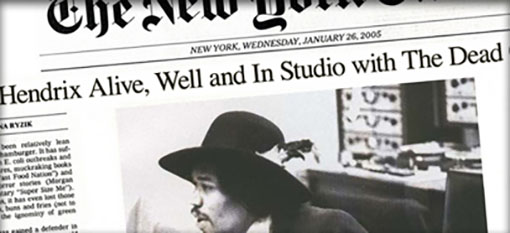

Introducing The Dead Goods
Yes, it is true. On the morning of 12th May 2006, six supposedly dead rock stars walked into the offices of Colly Logic Records and announced their intentions to bring their music to the world once more. The six - Jimi Hendrix, John Lennon, Kurt Cobain, Jeff Buckley, Janis Joplin and Keith Moon - have actually been on a small island called Flatey just off the coast of Iceland all along, piecing together the 12 songs for their comeback album Six Feet Over. Founder member Elvis Presley backed out at the eleventh hour, citing ongoing commitments with his cod farm as the reason for his withdrawal.
22/06Jimi and John Announce Tour
During a press conference this morning, Mr. Hendrix and Mr. Lennon announced a string of impromptu dates across the UK, starting with the Badger and Partridge pub in Kings Cross tonight. 18/06The Dead Goods are Here! Last night at 2300 hrs, The Dead Goods landed at London's Heathrow Airport, and were greeted by thousands of fans. The band are over here for a promotional tour to prove that they really exist.
18/06The Dead Goods are Here!
Last night at 2300 hrs, The Dead Goods landed at London's Heathrow Airport, and were greeted by thousands of fans. The band are over here for a promotional tour to prove that they really exist.